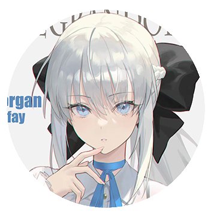
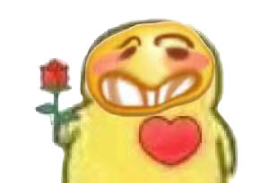

私の名前は吉良……（bushi）我是山口组的CIO兼程序员庄子岳，主要工作是帮助组长协调组内工作、提交小组的作业，同时也负责部分代码的编写。
小学期对我来说是一次新的体验，最开始知道要在三个星期之内做出一款游戏时，内心十分茫然，面对一大堆资料和要学习的内容，这感觉，“怎一个愁字了得！” 但是在学习和练习制作网页的过程中，对于html语言逐渐也有了一些头绪，相信在小学期的三周里能收获许多！
爱好倒也不是很多，体育方面比较喜欢跑步、网球。平时喜欢看番，打游戏，各种类型番都看！最近的《lycoris recoil》《夏日重现》都有看，还在补空境。 游戏的话主要玩fgo、方舟，qq 1351378496 欢迎交流！

我要当梣小姐的狗！